Telaio a Nodi Spostabili - Maglie Rettangolari
G.Piluso Febbraio - 2004
Vengono assunti positivi:
1 - gli spostamenti verticali verso l'alto;
2 - gli spostamenti orizzontali verso sinistra;
3 - le rotazioni orarie;
4 - i carichi verticali verso il basso;
5 - i carichi orizzontali verso destra;
5 - le coppie antiorarie;
L'esempio e la teoria è stata tratta dal libro di M.Capurso "Introduzione al Calcolo Automatico delle Strutture" - Edizioni Scientifiche A.Cremonese - Roma - Ristampa 1981.
>
restart:
with(linalg):
with(plots):
with(plottools):
>
NI:=16: # Numero delle Incognite
NT:=20: # Numero delle Aste
x1:=array(1..NT): y1:=array(1..NT):
x2:=array(1..NT): y2:=array(1..NT):
L:=array(1..NT):
E:=array(1..NT):
J:=array(1..NT):
p:=array(1..NT):
N:=array(1..NT,1..4):
k:=array(1..4,1..4):
so:=array(1..4):
yo:=array(1..NI):
X:=array(1..NI):
A:=array(1..NI,1..NI):
B:=array(1..NI,1..NI):
Uo:=array(1..4):
Sol:=array(1..4):
Matrice di Rigidezza della Trave Generica
>
# colonna 1
k[1,1]:=4*E[t]*J[t]/L[t]:
k[2,1]:=-6*E[t]*J[t]/L[t]^2:
k[3,1]:=2*E[t]*J[t]/L[t]:
k[4,1]:=6*E[t]*J[t]/L[t]^2:
# colonna 2
k[1,2]:=-6*E[t]*J[t]/L[t]^2:
k[2,2]:=12*E[t]*J[t]/L[t]^3:
k[3,2]:=-6*E[t]*J[t]/L[t]^2:
k[4,2]:=-12*E[t]*J[t]/L[t]^3:
# colonna 3
k[1,3]:=2*E[t]*J[t]/L[t]:
k[2,3]:=-6*E[t]*J[t]/L[t]^2:
k[3,3]:=4*E[t]*J[t]/L[t]:
k[4,3]:=6*E[t]*J[t]/L[t]^2:
# colonna 4
k[1,4]:=6*E[t]*J[t]/L[t]^2:
k[2,4]:=-12*E[t]*J[t]/L[t]^3:
k[3,4]:=6*E[t]*J[t]/L[t]^2:
k[4,4]:=12*E[t]*J[t]/L[t]^3:
# reazioni d'incastro perfetto
so[1]:=-p[t]*L[t]^2/12:
so[2]:=p[t]*L[t]/2:
so[3]:=p[t]*L[t]^2/12:
so[4]:=p[t]*L[t]/2:
Dati (M.Capurso pag.159 fig.31)
>
# Coordinate Travi
x1[1]:=0.0: y1[1]:=1510.0:
x2[1]:=565.0: y2[1]:=1510.0:
x1[2]:=565.0: y1[2]:=1510.0:
x2[2]:=1250.0: y2[2]:=1510.0:
x1[3]:=0.0: y1[3]:=1130.0:
x2[3]:=565.0: y2[3]:=1130.0:
x1[4]:=565.0: y1[4]:=1130.0:
x2[4]:=1250.0: y2[4]:=1130.0:
x1[5]:=0.0: y1[5]:=770.0:
x2[5]:=565.0: y2[5]:=770.0:
x1[6]:=565.0: y1[6]:=770.0:
x2[6]:=1250.0: y2[6]:=770.0:
x1[7]:=0.0: y1[7]:=250.0:
x2[7]:=565.0: y2[7]:=250.0:
x1[8]:=565.0: y1[8]:=250.0:
x2[8]:=1250.0: y2[8]:=250.0:
# Coordinate Piedritti
x1[9]:=0.0: y1[9]:=1130.0:
x2[9]:=0.0: y2[9]:=1510.0:
x1[10]:=565.0: y1[10]:=1130.0:
x2[10]:=565.0: y2[10]:=1510.0:
x1[11]:=1250.0: y1[11]:=1130.0:
x2[11]:=1250.0: y2[11]:=1510.0:
x1[12]:=0.0: y1[12]:=770.0:
x2[12]:=0.0: y2[12]:=1130.0:
x1[13]:=565.0: y1[13]:=770.0:
x2[13]:=565.0: y2[13]:=1130.0:
x1[14]:=1250.0: y1[14]:=770.0:
x2[14]:=1250.0: y2[14]:=1130.0:
x1[15]:=0.0: y1[15]:=250.0:
x2[15]:=0.0: y2[15]:=770.0:
x1[16]:=565.0: y1[16]:=250.0:
x2[16]:=565.0: y2[16]:=770.0:
x1[17]:=1250.0: y1[17]:=250.0:
x2[17]:=1250.0: y2[17]:=770.0:
x1[18]:=0.0: y1[18]:=0.0:
x2[18]:=0.0: y2[18]:=250.0:
x1[19]:=565.0: y1[19]:=0.0:
x2[19]:=565.0: y2[19]:=250.0:
x1[20]:=1250.0: y1[20]:=0.0:
x2[20]:=1250.0: y2[20]:=250.0:
# Lunghezze delle Aste
for t from 1 to NT do
L[t]:=sqrt((x2[t]-x1[t])^2+(y2[t]-y1[t])^2);
end do:
# Momenti di Inerzia delle Aste
J[1]:=1544079.708:
J[2]:=1544079.708:
J[3]:=1544079.708:
J[4]:=1544079.708:
J[5]:=1831686.154:
J[6]:=1831686.154:
J[7]:=1831686.154:
J[8]:=1831686.154:
J[9]:=40.0*40.0^3/12:
J[10]:=40.0*40.0^3/12:
J[11]:=40.0*40.0^3/12:
J[12]:=50.0*40.0^3/12:
J[13]:=50.0*40.0^3/12:
J[14]:=50.0*40.0^3/12:
J[15]:=60.0*50.0^3/12:
J[16]:=60.0*50.0^3/12:
J[17]:=60.0*50.0^3/12:
J[18]:=65.0*50.0^3/12:
J[19]:=65.0*50.0^3/12:
J[20]:=65.0*50.0^3/12:
# Moduli di Elasticità delle Aste
E[1]:=300000.0:
E[2]:=300000.0:
E[3]:=300000.0:
E[4]:=300000.0:
E[5]:=300000.0:
E[6]:=300000.0:
E[7]:=300000.0:
E[8]:=300000.0:
E[9]:=300000.0:
E[10]:=300000.0:
E[11]:=300000.0:
E[12]:=300000.0:
E[13]:=300000.0:
E[14]:=300000.0:
E[15]:=300000.0:
E[16]:=300000.0:
E[17]:=300000.0:
E[18]:=300000.0:
E[19]:=300000.0:
E[20]:=300000.0:
# Carichi Distribuiti sulle Aste
p[1]:=26.0:
p[2]:=26.0:
p[3]:=34.2:
p[4]:=34.2:
p[5]:=34.2:
p[6]:=34.2:
p[7]:=13.6:
p[8]:=13.6:
p[9]:=0.0:
p[10]:=0.0:
p[11]:=0.0:
p[12]:=0.0:
p[13]:=0.0:
p[14]:=0.0:
p[15]:=0.0:
p[16]:=0.0:
p[17]:=0.0:
p[18]:=0.0:
p[19]:=0.0:
p[20]:=0.0:
# Coppie e Forze Concentrate nei Nodi della Struttura
# (tante quante le incognite)
yo[1]:=0.0:
yo[2]:=0.0:
yo[3]:=0.0:
yo[4]:=2105.0:
yo[5]:=0.0:
yo[6]:=0.0:
yo[7]:=0.0:
yo[8]:=2738.0:
yo[9]:=0.0:
yo[10]:=0.0:
yo[11]:=0.0:
yo[12]:=3038.0:
yo[13]:=0.0:
yo[14]:=0.0:
yo[15]:=0.0:
yo[16]:=1549.0:
# Parametri di Spostamento Nodale
N:=[
[1,0,2,0],
[2,0,3,0],
[5,0,6,0],
[6,0,7,0],
[9,0,10,0],
[10,0,11,0],
[13,0,14,0],
[14,0,15,0],
[5,8,1,4],
[6,8,2,4],
[7,8,3,4],
[9,12,5,8],
[10,12,6,8],
[11,12,7,8],
[13,16,9,12],
[14,16,10,12],
[15,16,11,12],
[0,0,13,16],
[0,0,14,16],
[0,0,15,16]
]:
Azzero la Matrice ed i Vettori
>
for i from 1 to 4 do
Sol[i]:=0.0;
end do:
for i from 1 to NI do
for j from 1 to NI do
A[i,j]:=0.0:
end do:
end do:
Costruzione della Matrice A e del Vettore yo
>
for t from 1 to NT do
for i from 1 to 4 do
R:=N[t,i]:
for j from 1 to 4 do
#k[i,j]:=k[i,j]:
S:=N[t,j]:
if R <> 0 and S <> 0 then
A[R,S]:=A[R,S]+k[i,j]:
end if:
end do:
end do:
end do:
evalm(A):
for t from 1 to NT do
for i from 1 to 4 do
R:=N[t,i]:
if R <> 0 then
yo[R]:=yo[R] + so[i]:
end if;
end do:
end do:
evalm(yo):
Soluzione: Rotazioni e Spostamenti
>
B:=inverse(A):
X:=evalm(B&*(-yo));
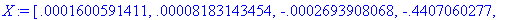
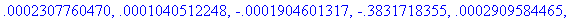
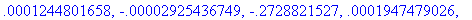
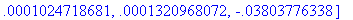
Soluzione: Momenti e Tagli
>
for t from 1 to NT do
for i from 1 to 4 do
R:=N[t,i]:
Uo[i]:=0.0:
if R <> 0 then
Uo[i]:=X[R]:
end if:
end do:
Sol:=evalm(k &* Uo):
for i from 1 to 4 do
Sol[i]:=Sol[i]+so[i]:
end do:
print('Asta ' - t, Sol);
end do:
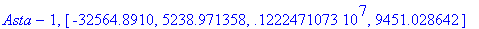
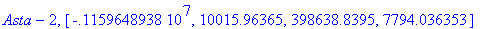
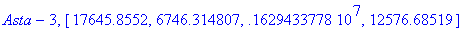
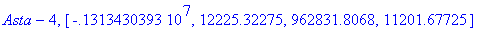
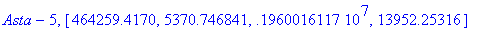
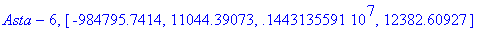
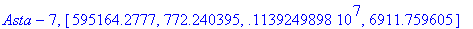
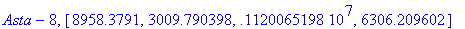
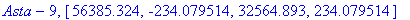
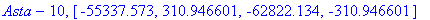
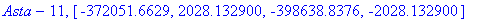
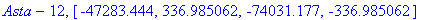
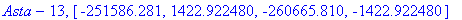
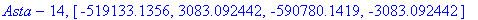
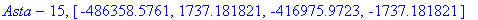
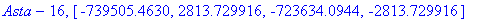
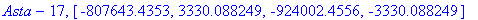
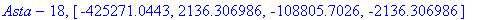
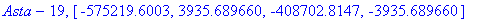
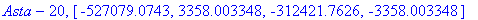
Schema della Struttura
>
for t from 1 to NT do
linea[t]:=line([x1[t],y1[t]],[x2[t],y2[t]],color=red):
end do:
plots[display](seq(linea[t],t=1..NT),axes=none);
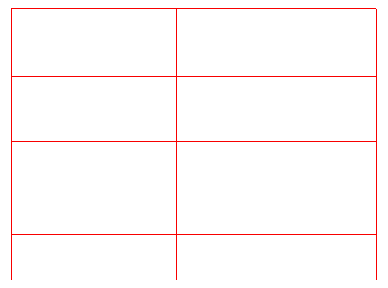